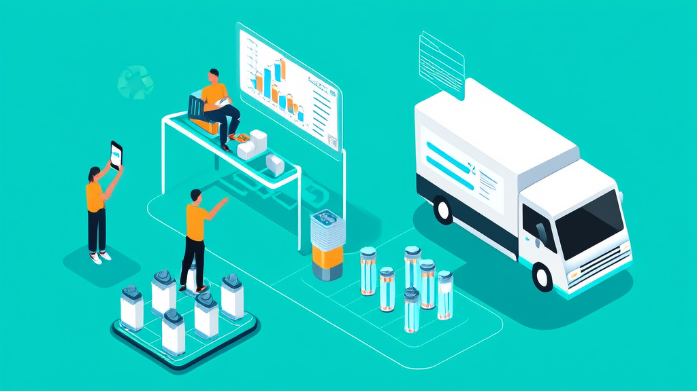
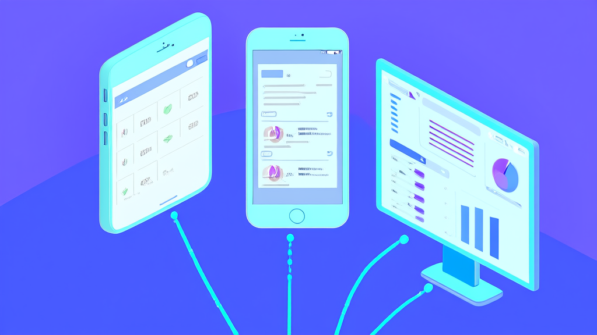
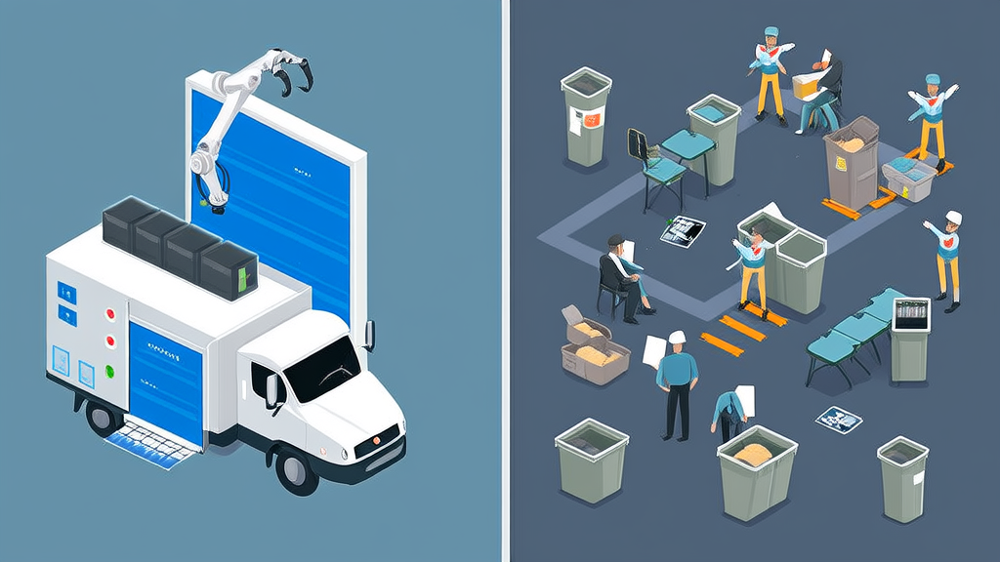
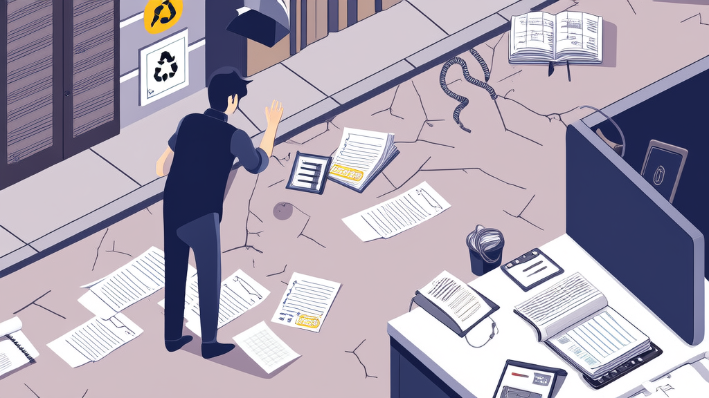
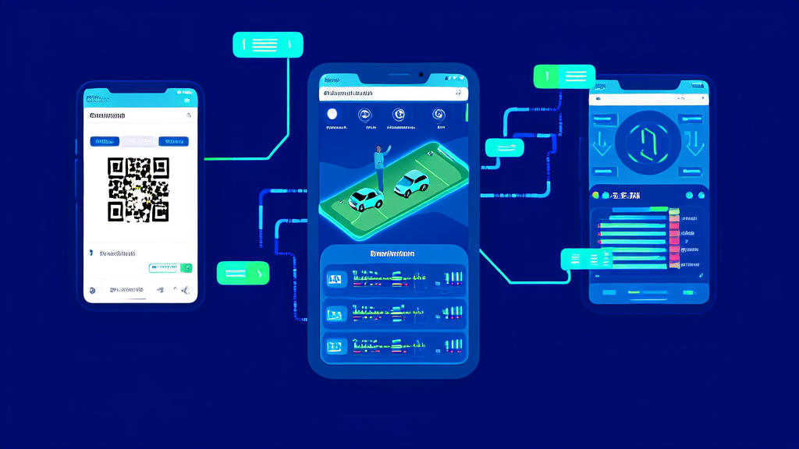

废旧电池回收系统案例：上门回收预约、派单结算与台账管理_讯业信息

某电池销售与回收企业通过讯业信息搭建的电池回收平台，把新品电池下单上门安装与废旧电池按年限、规格预约回收统一到用户端、回收员端与管理后台三端一体的系统中，实现废旧电池上门回收预约、回收订单派单结算与电池回收台账管理的全流程线上化。平台上线后，订单状态（等待上门、回收中、完成回收）对用户透明可查，新旧电池价格与产品上下线在后台统一配置并同步前端，入库、出库、库存台账与回收总量、营收、用户量报表可逐项核对。该案例为电池销售与回收一体业务提供了“以旧换新+上门回收+台账合规”的可复制数字化范式。
- 电池回收平台采用用户端、回收员端与管理后台三端一体架构，覆盖新品电池下单上门安装与废旧电池按年限、规格预约回收 3 端一体
- 回收订单状态被离散化为等待上门、回收中、完成回收三个节点，并按全部/等待上门/回收中/完成回收四类视图呈现 3 个状态节点 + 4 类订单视图
- 新旧电池价格调整与产品上下线统一在电池回收管理后台配置，前端展示随后台同步生效 1 处配置、前端同步
- 钱包提现采用“后台审核+财务线下打款”两段式流程，审核与打款节点全部留痕 2 段式资金流程
- 管理员与回收员差异化权限配置，派单、结算、台账等敏感操作收敛至管理后台 2 类角色权限隔离
- 系统输出回收总量、营收、用户量与回收统计四类报表，并形成入库、出库、库存三类台账 4 类经营报表 + 3 类库存台账
废旧电池回收系统案例：上门回收预约、派单结算与台账管理如何打通
结论摘要：某电池销售与回收企业通过讯业信息搭建的电池回收平台，把“新品电池下单—上门安装—旧电回收—派单结算—入库台账”统一到用户端、回收员端与管理后台三端一体的系统中。平台上线后，废旧电池上门回收预约、回收订单派单结算与电池回收台账管理全部线上留痕，订单状态对用户透明可查，新旧电池价格与产品上下线在后台统一管控。对同类企业而言，这是一套可复制的“以旧换新+上门回收+台账合规”数字化范式。
开篇摘要：一套系统打通用户预约、回收员派单与管理后台台账

某电池销售与回收企业通过讯业信息搭建的电池回收平台，把新品电池下单上门安装与废旧电池按年限、规格预约回收统一到同一套系统，覆盖用户端、回收员端与管理后台。
平台上线后，回收订单从预约、派单、回收到结算全流程线上留痕，订单状态（待上门、回收中、完成回收）对用户透明可查。后台同时实现新旧电池价格上下线与调价的统一管控，并建立入库、出库、库存台账与回收统计报表。对这家企业而言，废旧电池回收业务由此从依赖电话与人工协调，转向可配置、可追溯的系统化管理。
行业背景与挑战：电池销售与废旧电池回收为何需要线上化

电池销售与废旧电池回收是两个高度关联却长期割裂的场景。销售端已经习惯线上化，回收端却仍大量依赖电话、微信等分散渠道：用户不清楚该找谁预约，回收员与订单之间也缺少统一的调度枢纽。
随着以旧换新与上门服务成为消费习惯，问题被进一步放大。企业如果没有面向用户的线上入口，也没有后台台账，既接不住增量订单，也难以核算回收物资与营收——哪些电池收回来了、什么时候入库、当期回收总量多少，往往要靠事后补录与人工对账。
电池回收线上化面临的几项行业共性挑战：
- 价格波动频繁：新旧电池的回收价与销售价随行情调整，前端展示与后台配置容易出现不一致。
- 产品型号规格多：不同年限、不同规格的电池回收标准不同，需要结构化采集而非口头描述。
- 库存与回收量需要可追溯：入库、出库、库存三项数据必须能对应到具体订单，否则台账失去意义。
与此同时，监管与用户对环保合规、隐私协议与回收流向透明度的关注度持续提升，回收业务不再只是“把旧电池收走”，而是一套需要留痕、可审计的流程。
这些问题共同指向一个结论：电池回收业务需要的不是零散工具，而是一套覆盖上门回收预约、回收订单派单结算与电池回收台账管理的完整系统。
客户痛点：废旧电池回收入口缺失、流程分散、台账靠手工

本案客户同时经营新品电池销售与废旧电池回收。在系统上线前，其业务运转方式在同行业中具有相当的代表性，也因此集中暴露了五类问题。
第一，废旧电池回收缺少线上入口。 用户想处理旧电池，只能通过电话或社交软件咨询，无法按年限、规格自助预约上门回收。对企业来说，每一次回收需求都意味着一轮人工沟通与登记，咨询成本与录入成本叠加。
第二，新品安装与旧电回收两条流程彼此分散。 用户下单新电池后需要上门安装，安装时往往顺势回收旧电池，但两个环节没有统一订单跟踪，用户问进度、客服查进度都要跨人确认。
第三，派单与结算依赖人工，订单状态不透明。 谁去回收、什么时候上门、是否完成、结算多少，缺少统一节点记录；待上门、回收中、完成三种状态无法直观呈现，异常订单的处理往往要耗费数轮沟通。
第四，价格与产品上下线缺乏后台统一管控。 新旧电池的价格调整、产品上架与下架分散在不同人手里，前端在售状态与价格容易出现不一致，直接影响以旧换新的报价准确性。
第五，库存台账与统计报表缺失。 各类电池的入库、出库、库存靠手工记录，回收总量与营收难以准确核对，价格策略与备货决策缺乏数据支撑。
这些问题的共同点在于：业务在跑，但流程没有被结构化。只要订单量上升，人工协调的边际成本就会迅速放大。
解决方案：用户端、回收员端、管理后台三端一体的电池回收平台

针对上述痛点，讯业信息为客户搭建了一套覆盖用户端、回收员端与管理后台的电池回收平台。整体架构以“卖新电池—上门安装—旧电回收—派单结算—入库台账”为主线，把新品电池下单上门安装与废旧电池按年限、规格预约回收放在同一套系统内，并在后台完成派单、结算、价格与台账管理。
用户端首页由后台统一配置，包含可后台控制的轮播图、新品电池、旧电回收与热门活动（新人注册与推荐拉新返现）等入口。这一设计把以旧换新电池的转化路径前置到首页，用户无需跳转即可完成从选购到回收预约的动作。
立即回收模块承接上门回收预约。用户填写地址定位、上门时间、产品规格型号（支持拍照上传）与联系人信息后提交，系统生成结构化回收订单。相比口头描述，规格型号与照片凭证让回收员在上门前就能判断电池类型与处理方式，减少无效上门。
订单与个人中心解决进度透明度问题。订单按全部、等待上门、回收中、完成回收四类状态呈现，用户可自助查询；个人中心提供余额钱包提现（经后台审核后由财务线下打款）、我的回收、关于我们、隐私协议与意见反馈，既满足资金流转的可追溯要求，也覆盖了合规与用户沟通所需的入口。
回收员端与管理后台承担调度与结算职能。后台指定人员派单，回收员在上门完成订单后提交结算；管理后台统一管理用户信息与上门信息，支持订单筛选、导出与统计，并可在异常情况下处理订单、修改价格。派单权集中在后台，避免了抢单与重复派单造成的混乱。
价格、报表与台账构成经营侧的管理闭环。新旧电池产品的上线与价格调整统一在电池回收管理后台配置，前端展示随后台同步生效；系统输出回收总量、营收、用户量与回收统计等报表；各类电池的入库、出库、库存形成台账。同时，平台按管理员与回收员配置差异化操作权限，确保派单、结算、台账等敏感操作有据可查。
实施过程与关键决策：从流程梳理到三端上线
讯业信息在项目实施中没有先动界面，而是先把业务主线拆解清楚：将“卖新电池—上门安装—旧电回收—派单结算—入库台账”拆成可配置的线上流程，再逐一映射到三端功能。在此基础上，形成了四项影响后续使用的关键决策。
决策一：订单状态离散化设计。 将订单状态明确划分为待上门、回收中、完成回收三个节点，而不是笼统的“处理中”。状态节点清晰后，派单与结算才有了明确的触发条件，后台判断异常订单也有了依据——例如长期停留在“回收中”的订单可以被快速识别并介入。
决策二：价格与产品上下线全部收口到后台。 前端不再单独维护价格，所有调价与上下架动作都在电池回收管理后台完成。这一决策直接支撑了以旧换新的灵活定价：行情变动时只需在一处修改，避免前端与后台价格不一致引发的报价纠纷。
决策三：钱包提现走“后台审核+财务线下打款”。 回收业务中存在大量小额、高频的资金往来，纯线上自动打款在合规与风控上存在压力。项目组选择了折中路径：用户在个人中心发起提现，后台审核通过后由财务线下打款，流程节点全部留痕，在业务灵活性与资金合规之间取得平衡。
决策四：回收员与管理员权限差异化配置。 派单、结算、台账属于敏感操作，回收员端仅保留接单、完成订单、提交结算等与其职责匹配的能力，其余权限收敛到管理后台。权限边界清晰，是后续台账能够被信任的前提。
实施效果：订单透明、价格可控、台账可查
流程效果。 废旧电池回收从线下登记转为线上自助预约，用户可按年限与规格提交上门回收需求，并留存联系方式与照片凭证。回收订单不再依赖聊天记录还原，而是以结构化数据的形式进入系统。
管理效果。 派单与结算由管理后台统一发起，订单全状态可筛选、可导出、可统计；异常订单可即时处理与改价，处理过程有操作记录可循。客服与用户查询进度时依据同一份数据，减少跨人确认。
经营效果。 回收总量、营收、用户量与回收统计形成报表，各类电池的入库、出库与库存台账可逐项核对，为价格策略与备货计划提供依据。价格调整与产品上下线在一处完成，前端展示随后台同步。
需要说明的是，本案例素材未提供具体量化指标（如订单处理时长缩短比例、人工成本下降幅度等），上述效果以流程与能力层面的改善为主，具体数值以企业实际运营数据为准。
价值总结：电池回收业务的数字化底座
对用户。 一个入口即可完成新品电池下单与废旧电池上门回收预约，进度透明、可反馈、可查询历史记录，隐私协议与意见反馈入口齐备。
对企业。 价格、订单、派单、结算与库存台账收口到同一后台，减少人工协调成本，回收数据从一次性消耗品变为可复用的数据资产。这套废旧电池回收系统的价值不在于单点功能，而在于把原本分散在多个渠道的业务动作纳入同一套可配置流程。
对行业。 为电池销售与回收一体的业务提供了“以旧换新+上门回收+台账合规”的可复制系统化范式。对于同样面临价格波动、规格繁杂、台账缺失问题的企业，该模式具备直接参照意义。
本案例素材未提供客户原话评价，此处以价值总结替代客户证言。了解更多企业数字化转型与系统集成方案，可访问讯业信息官网 https://www.xunyeit.com 。
常见问题 FAQ
Q1：废旧电池如何预约上门回收？
A：用户在“立即回收”模块填写地址定位、上门时间、产品规格型号（支持拍照）与联系人信息后提交，系统生成结构化回收订单，再由电池回收管理后台派单给指定回收员上门。
Q2：回收订单的派单和结算怎么处理？
A：由电池回收管理后台指定回收员派单，回收员完成订单后提交结算。订单状态分为等待上门、回收中、完成回收三类，支持筛选、导出与统计，异常订单可在后台即时处理。
Q3：电池回收价格和产品上下线能否随时调整？
A：可以。新旧电池产品的上线与价格调整均在电池回收管理后台统一配置，前端展示随后台同步生效，避免前后端价格不一致，支撑以旧换新的灵活定价。
Q4：回收物资的库存台账如何管理？
A：各类电池的入库、出库与库存均在后台形成台账与统计报表，回收总量、营收、用户量可汇总查看。管理员与回收员按权限差异化操作，敏感动作有据可查。
Q5：钱包余额提现如何到账？
A：用户在个人中心发起提现，经后台审核通过后由财务线下打款，审核与打款流程节点可追溯。
Q6：关于讯业信息，河南讯业信息科技有限公司是做什么的？
A：河南讯业信息科技有限公司（简称讯业信息）是一家专注企业数字化转型的高科技企业，提供软件开发、系统集成与 AI 智能化解决方案，官网为 https://www.xunyeit.com 。本案中的电池回收平台即由其搭建，覆盖用户端、回收员端与管理后台三端，实现上门回收预约、派单结算与台账管理全流程线上化。
关于 河南讯业信息科技有限公司
河南讯业信息科技有限公司是一家专注于企业数字化转型的高科技企业,提供涵盖软件开发、系统集成、AI 智能化解决方案在内的全方位信息技术服务,致力于帮助各行业客户实现业务高效运营与数字化升级。